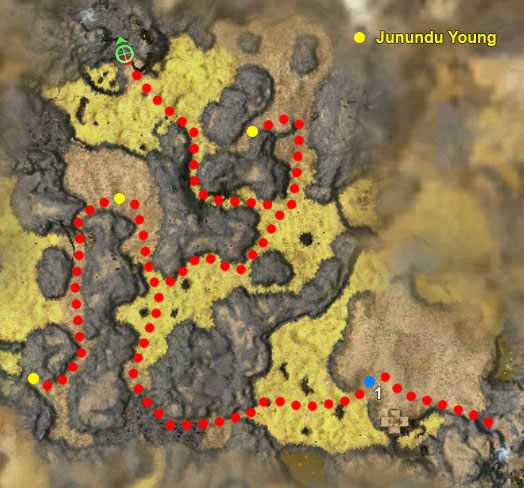

Elite: Soldier's Stance
M13
Gate of Desolation
◉ Mission Map

Click to enlarge · Local cache · Wiki
Summary (click to expand)
This is a lengthy mission where you tame the Junundu to gain the ability to travel the Desolation .
Region: The Desolation · Mission: 13 of 20 · Type: Cooperative
Required hero: Zhed Shadowhoof
✓ Objectives
Tame Queen Aijundu and gain control of the junundu wurms.
- ADDED: Defeat Queen Aijundu and her undead minions.
- ADDED: Call forth a junundu so you may ride it through the sulfur.
- ADDED: Guide the junundu to the Remains of Sahlahja.
- *Bonus* Protect the junundu young from the demon hordes.
- You have saved [0...3] of 3 junundu young.
→ Walkthrough
As you enter the mission Palawa Joko starts to talk and will lead you to a Wurm Spoor to the left of the entrance. The Wurm Spoor is situated in a hole beyond which the yellow Sulfurous Haze begin. To walk in human form on the areas which show as bright yellow on the map means near immediate death. Stay clear.
It is at this Wurm Spoor (1 on the map) that you will tame Queen Aijundu, so set up for the fight. You should stage the fight from the hill over looking the Wurm Spoor which will give you a height advantage and keeps you away from the sulfur. If you are using heroes and henchmen, they should be pinned at the top of the hill at the point furthest from the sulfur and set to defensive mode. For a better idea, when Palawa Joko runs to the Wurm Spoor, he will stop before reaching it, then move to the other side, and then remain in that spot until you tame Aijundu. Flag your heroes and henchmen at the point he stops at before moving to his final position. If there is a minion master in your party, avoid fighting near Palawa Joko, since he will use Well of Darkness on recharge, exploiting the corpses that the minion master could have used; however, if your party doesn't have a minion master, it is recommended to fight near Palawa Joko, so he will create Wells of Darkness that will hinder hexed undead physical attackers and at the same time prevent Awakened Defilers from using those corpses to create Wells of Darkness that will hinder your party.
After a few groups of undead have attacked and been defeated, Queen Aijundu will approach and attack. Once her health has been reduced a bit she will retreat and further undead will attack. There are quite a few bosses who spawn in the undead groups - keep an eye out for them. Aijundu will attack again when all the undead are killed, this time when you've damaged her enough she will allow you to use the wurms to cross the Desolation. Look out for enemies with hard resses: Awakened Acolytes, Awakened Cavaliers and especially the boss Chakeh the Lonely. Left alone these will resurrect fallen enemies on top of the new groups approaching you, which might overwhelm the party. Tip: If you feel your party is overwhelmed with attacking foes try running away from the Wurm Spoor. Not all enemies will follow you all the way to your new destination. This smaller group of enemies will be easier to individually target and take down. This also gives your party a chance to regroup, heal, and target the remaining foes left guarding the Wurm Spoor. Also it's not necessary to fight next to the Wurm Spoor. You can flag your party a fair distance away at the start and simply pull the successive groups of enemies.
The order of appearance of the bosses is as follows: first Chakeh the Lonely (Paragon); second Avah the Crafty (Warrior); third Chundu the Meek (Dervish); fourth and fifth appear together, Nehmak the Unpleasant (Necromancer) and Amind the Bitter (Mesmer).
Click on the Wurm Spoor. This will summon wurms to transport you and the party. You now have control of the wurm and will use Junundu skills rather than those you have equipped on your character. You can now travel on the sulfur areas without dying.
Follow Palawa Joko as he leads you to the Remains of Sahlahja. Along the way you will fight groups of Margonites and Elementals. Margonites are easy to take down in the Desert Wurm disguise, but take care with the Elementals, especially the Sandstorm Crags whose earth damage attacks prove dangerous to the wurms. Mind that both these and Cracked Mesas cannot be knocked down for healing through Junundu Bite nor leave corpses for Junundu Feast. Remember to use Junundu Wail to resurrect fallen party members and heal once a fight is over.
During the journey you will encounter rocky ground which the wurms cannot travel through. You will have to abandon the wurm until you find another Wurm Spoor which will allow you to travel on the sulfur again. By timing your movement, you can avoid the Margonite group nearby and proceed to the next Wurm Spoor. You complete the mission when you reach the Remains of Sahlahja.
★ Bonus
The bonus is not difficult, but it detours from Joko's direct route in order to rescue 3 Junundu Young. There is no need to exit Junundu to reach them.
Each Junundu Young is surrounded by a group of a half-dozen Margonites. Follow the bonus route on the map and kill each group in turn. As you do, an advice box appears stating that the young has been saved and you can move on to the next objective along the path. You still receive credit for a rescue even if the young dies after you have disposed of the foes that threatened it.
Although the Margonites do not attack the young directly, these wurms can be hurt by area of effect skills, including your own — most notably, the young can be damaged by Junundu Smash. To guarantee the bonus, pull the Margonites away from the young before engaging them in combat.
◆ Hard Mode
No dedicated Hard Mode section on the wiki — expect tougher foes and adjusted mechanics. See walkthrough notes.
☠ Bosses & Elites
Elite: Signet of Suffering
Elite: Hex Eater Vortex
Elite: Soldier's Fury
Elite: Vow of Silence
Elite: None / not listed
✦ Tips & Notes
Skill recommendations
- Damage
- Holy damage does double damage to undead.
- Area of effect spells, non-spell skills, and certain enchantment removal skills can help to overcome Obsidian Flesh and Vow of Silence, used by the Carven Effigies and Awakened Dune Carvers respectively.
- Support
- Minions created outside the wurms can run through the Sulfurous Haze; however, while in the Desert Wurm disguise, the party will not be able to heal or create new minions.
- Bring plenty of party-wide heals, protective wards, and/or anti-melee and anti-caster skills — the undead at the start can be overwhelming to an unprepared party.
- Comfort Animal/Heal as One or a beast master build, since animal companions each enter a Junundu in this mission (unlike other locations with Wurm Spoors), which results in your party having more than eight Junundu wurms. They deal damage with attacks; however, they will not use Junundu skills and will not be resurrected by Junundu Wail (but will reappear, alive, beside their owner when they leave the Junundu).
- Utility
- Rebirth or Sunspear Rebirth Signet for resurrection, since they are more convenient for any party members who die on the sulfur.
- Lightbringer skills are not very useful, since your party will encounter the majority of Margonites while inside the Junundu and the other foes in this mission are not affected by those skills.
Notes
- When crossing the desolation, Palawa Joko does not need to be with you to complete the mission - you may as well rush forward without his guidance.
- The mission does not progress past the fifth boss, unless you return to Joko, who will say his remaining lines and then you'll become able to use the Wurm Spoor.
- If Joko is missing, retrace your steps back towards the start of the mission; he may have gone a different way and stopped once you became separated.
- When riding junundu, remember to switch heroes from Avoid Combat to Guard or Fight mode, otherwise they will be ineffective during battle.
- It is fairly easy to die while in a junundu since your team members cannot heal you. The death resets progress toward the Survivor title. Flagging heroes can be done to avoid that.
- Bringing a Signet of Capture overrides one of the Junundu skills. The position of the Signet of Capture on the skill bar will correspond to the Junundu skill that is removed.
- It is recommended to place it at the fourth position before using a Wurm Spoor, since Unknown Junundu Ability is an unusable skill that usually takes that slot.
- It is not necessary to be inside the junundu to rescue the young. All three of the young are in sandy areas that you can traverse without being in the wurms. Consider dismounting from the junundu and fighting outside the wurms if you prefer to use your build over the Junundu skills.
- You no longer have to keep the young worms alive to get credit for the bonus, just approach them and the bonus note will update.
- After completing this mission, your party will be sent to the Remains of Sahlahja.
- Completion of this mission will fill in page #13 in the Night Falls storybook.
Spoiler alert: The following text contains spoilers relating to the story of Guild Wars Nightfall regarding events leading up to the next mission.
↑ : Junundu Siege will not be available during this mission even for players who already unlocked it through learning it during Horde of Darkness by consuming an Elder Siege Wurm).